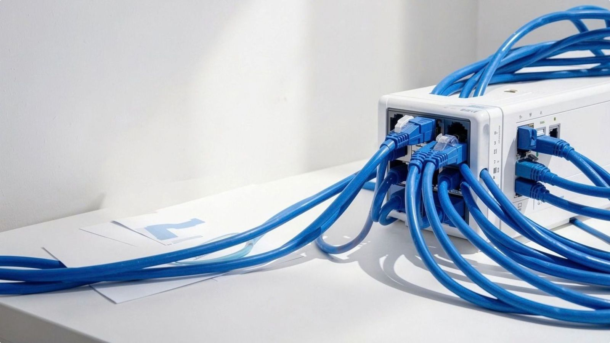
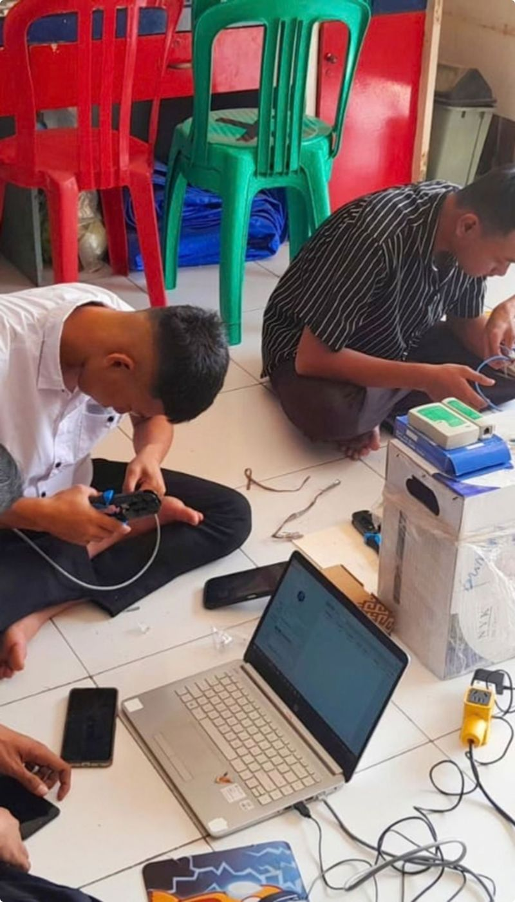
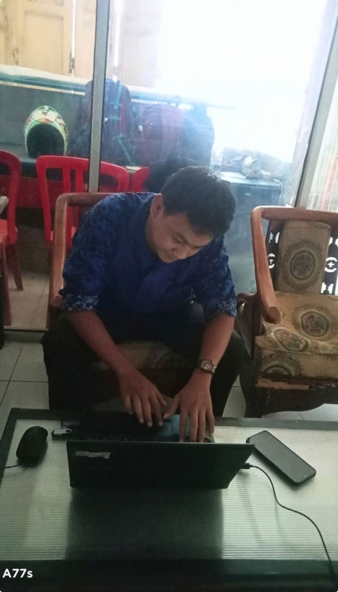

Servis komputer
Cek gejala, bersihkan, perbaiki atau ganti komponen, lalu uji akhir.
Demikian laporan Praktik Kerja Lapangan di PRODATA tentang penerapan dasar jaringan, TKJ, servis komputer, perawatan perangkat, dan konfigurasi Mikrotik.
Gerdy Hendraman · XII TKJ · SMK Budi Arti CirebonPengalaman tiga bulan menerapkan ilmu Teknik Komputer dan Jaringan di lingkungan kerja: servis komputer, perawatan perangkat, dan konfigurasi Mikrotik.

PKL menjadi jembatan antara pembelajaran TKJ dan dunia kerja.
Praktik Kerja Lapangan di PRODATA memberi kesempatan untuk menerapkan kompetensi secara langsung dalam lingkungan kerja profesional.
Selama PKL, pekerjaan yang dijumpai mencakup empat bidang berikut.
Cek gejala, bersihkan, perbaiki atau ganti komponen, lalu uji akhir.
Kabel UTP, alamat IP, switch, dan konfigurasi Mikrotik.
Materi visual sederhana yang rapi dan mudah dibaca.
Proposal, dokumen, dan pencatatan yang teliti.
PKL memberi kesempatan menerapkan kompetensi sekolah pada situasi nyata.
Siswa belajar mengikuti alur kerja, standar, dan tanggung jawab profesional.
Pengalaman lapangan membantu memahami kebutuhan pekerjaan di bidang jaringan dan komputer.
Menerapkan ilmu Teknik Komputer dan Jaringan.
Materi kelas dipakai langsung pada pekerjaan nyata.
Memahami perangkat komputer dan jaringan, termasuk Mikrotik.
Tahu fungsi, cara menghubungkan, dan tanda saat perangkat bermasalah.
Menambah pengalaman kerja dan wawasan dunia industri.
Melihat pembagian kerja dan cara berkomunikasi di industri.
Meningkatkan keterampilan, kedisiplinan, dan tanggung jawab.
Pekerjaan diselesaikan sampai diuji, sesuai prosedur.

Cek gejala, periksa komponen, bersihkan, perbaiki, uji ulang.
Hardware, jaringan, IP dan LAN, troubleshooting, perawatan.
Langkahnya ada pada bagian Konfigurasi Mikrotik.
Menyusun proposal dan merapikan format dokumen.
Membuat desain sederhana dan membantu pencatatan.
Hardware komputer dan fungsi komponennya.
Jaringan komputer dan perangkat jaringan.
IP address dan jaringan LAN.
Identifikasi masalah dan troubleshooting.
Perawatan perangkat agar tetap berfungsi baik.
/24 berarti tiga angka pertama menandai jaringan dan angka terakhir menandai perangkat.
Router dengan sistem RouterOS, diatur lewat Winbox, web, atau baris perintah.
Satu port ke modem (WAN), satu port ke switch (LAN).
Port LAN diberi IP, misalnya 192.168.88.1/24, lalu DHCP server dibuat.
Default route ke modem, ditambah NAT masquerade.
Ping ke gateway, ping ke 8.8.8.8, lalu buka situs lewat nama domain.
0.0.0.0/0 mengarahkan semua tujuan yang tidak dikenal ke modem.Internet → Modem/Router → Mikrotik → Switch → Client
Bila koneksi gagal, periksa jalur ini satu titik demi satu titik: kabel, alamat IP, ping ke gateway, ping ke internet.
Selama PKL di PRODATA, kompetensi TKJ diterapkan melalui pengalaman nyata yang terarah.
Memahami koneksi, perangkat, dan alur komunikasi jaringan.
Melatih ketelitian melalui servis komputer dan pemeliharaan perangkat.
Menerapkan pengaturan jaringan sesuai kebutuhan dan prosedur kerja.
Demikian laporan Praktik Kerja Lapangan di PRODATA tentang penerapan dasar jaringan, TKJ, servis komputer, perawatan perangkat, dan konfigurasi Mikrotik.